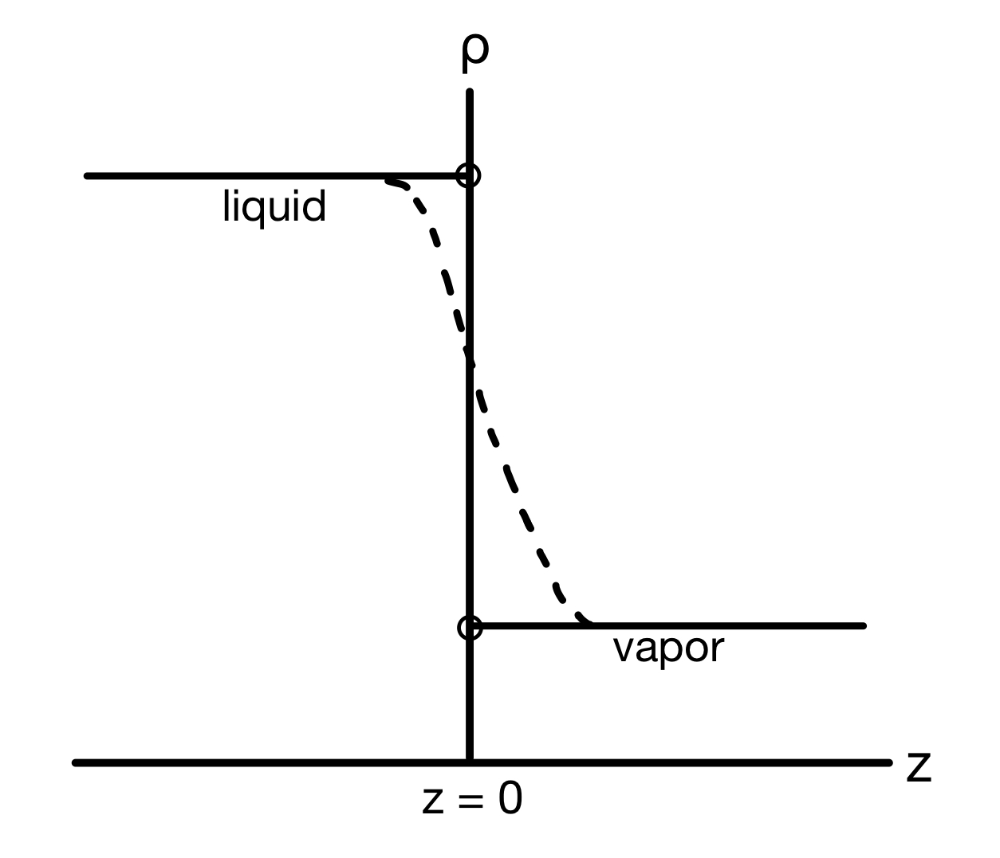
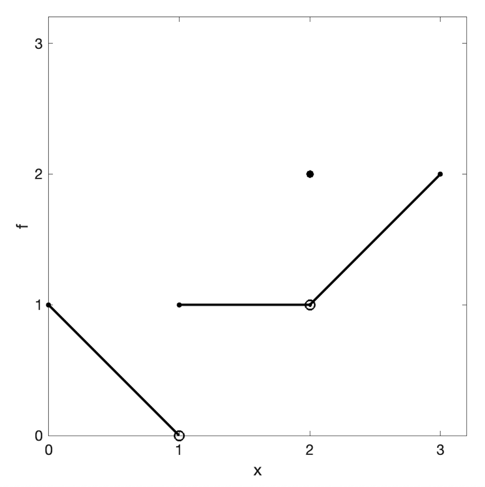

1.2. Limits#
1.2.1. Motivation#
What is the behavior of a function as its argument approaches a certain value? For example, what happens to a function near boundaries of its domain? Near “holes”? Under “extreme” cases, such as when something gets very small?
Some functions have limits. For example:
is not defined when \(x=1\). What happens to it near 1? First, let’s factor and simplify:
So, we expect that f should be well-behaved and have a value that approaches 2 as x approaches 1! Let’s verify numerically:
\(x\) |
\(f\) |
|---|---|
0.9 |
1.9 |
0.99 |
1.99 |
0.999 |
1.999 |
1.001 |
2.001 |
1.01 |
2.01 |
1.1 |
2.1 |
and also looking at a graph

However, some functions do not have limits. For example:
is not defined at \(x = 0\). As x approaches zero from the positive or negative side, the function “blows up” to \(\pm\infty\). The sign depends on whether x is positive or negative.
\(x\) |
\(f(x)\) |
|---|---|
0.1 |
10 |
0.01 |
100 |
-0.01 |
-100 |
-0.1 |
-10 |
This divergence is clear on a plot:

We say that such a limit does not exist.
1.2.2. Limit laws#
There are some simple limits and rules for combining them that are convenient to know because they can be used to evaluate limits of more complicated functions:
Constant
(1.17)#\[\begin{equation} \lim_{x \to c} k = k \end{equation}\]Identity
(1.18)#\[\begin{equation} \lim_{x \to c} x = c \end{equation}\]Continuous function
(1.19)#\[\begin{equation} \lim_{x \to c} f(x) = f(c) \end{equation}\]if \(f(x)\) is continuous at x (no jumps or holes).
Sum
(1.20)#\[\begin{equation} \lim_{x \to c} \left(f(x) + g(x)\right) = \lim_{x \to c} f(x) + \lim_{x \to c} g(x) \end{equation}\]Difference
(1.21)#\[\begin{equation} \lim_{x \to c} \left(f(x) - g(x)\right) = \lim_{x \to c} f(x) - \lim_{x \to c} g(x) \end{equation}\]Product
(1.22)#\[\begin{equation} \lim_{x \to c} f(x)g(x) = \left(\lim_{x \to c} f(x)\right)\left(\lim_{x \to c} g(x)\right) \end{equation}\]Quotient
(1.23)#\[\begin{equation} \lim_{x \to c} \frac{f(x)}{g(x)} = \dfrac{\lim_{x \to c} f(x)}{\lim_{x \to c} g(x)} \end{equation}\]Power
(1.24)#\[\begin{equation} \lim_{x \to c} f(x)^{r/s} = \left(\lim_{x \to c} f(x)\right)^{r/s} \end{equation}\]where r and \(s \ne 0\) are integers. The limit of f must be positive if s is even.
1.2.3. Taking limits#
“Nice” functions can be evaluated directly
This works even if they are complicated
Limits are most useful when functions have “holes” (function is not defined at \(x_0\))
Note that this function had a “hole” at \(x = 1\) that we removed by factoring. This works even if the factors are “ugly”:
Here, we made use of the difference of squares identity:
Another useful trick is to multiply by a factor of “1” that makes a difference of squares (multiply by conjugate)
1.2.4. Limits at infinity#
How do functions behave when x gets “big”? For example, if the independent variable is time, the behavior after waiting a long time may be a “steady state”.
{kind=link}
{kind=link}
i.e., f gets close to L when x is “big”.
Some important limits at infinity:
\(\displaystyle\lim_{x \to \pm\infty} k = k\)
\(\displaystyle\lim_{x \to \pm\infty} \dfrac{1}{x} = 0\)
\(\displaystyle\lim_{x \to -\infty} e^x = 0\)
Other limit laws (sum, quotient, etc.) also hold at infinity! If function is already in a convenient form, use known limits to evaluate unknown ones. For example,
For rational functions \(f(x) = p(x) / q(x)\), divide by largest power of x in denominator:
Not all functions have limits at infinity. Some “blow up”!
This limit does not exist. A helpful shortcut for rational polynomials: check coefficients of highest powers in numerator and denominator!
1.2.5. One-sided limits#
How do functions behave as you approach a point \(x_0\) from a direction? One physical example of this is an old question in statistical mechanics: when you have vapor-liquid phase coexistence, does the density change stepwise or continuously at the interface?
{kind=link}
If the density as a function of distance from the interface is \(\rho(z)\), the liquid density can be denoted as \(\lim_{z \to 0^-} \rho(z)\), while the vapor density can be denoted as \(\lim_{z \to 0^+} \rho(z)\).
For example, if
We see that \(\lim_{x \to 0^+} f(x) = 1\) (the value from the right), while \(\lim_{x \to 0^-} f(x) = -1\) (the value from the left). Thus, \(\lim_{x \to 0} f(x)\) does not exist.
Normal limit laws also still apply to one-sided limits:
However, be careful about which piece of the function applies:
where we used the limit we already found of \(f(x) = |x|/x\) above to evaluate the second limit.
Example: One-sided limit challenge
Using
{kind=link}
Find the limits at \(x = 1\) and \(x = 2\).
From the graph, \(\lim_{x \to 1^-} f(x) = 0\) and \(\lim_{x \to 1^+} f(x) = 1\), so \(\lim_{x \to 1} f(x)\) does not exist.
However, \(\lim_{x \to 2^-} f(x) = 1\) and \(\lim_{x \to 2^+} f(x) = 1\), so \(\lim_{x \to 2} f(x) = 1\), even though \(f(2) = 2\).